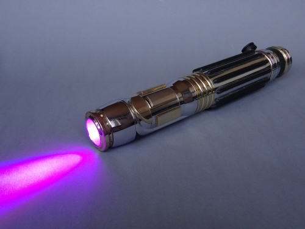

Available options for lightsabers:
Luke's Lightsaber
A secondary Jedi blade color of equal significance to blue. Used by Luke Skywalker, Qui-Gon Jinn, and Yoda.

Anakin's Lightsaber
The most standard color for a Jedi lightsaber. Used by Obi-Wan Kenobi and Anakin Skywalker.

Darth Vader's Lightsaber
Evil Force users wield red-bladed weapons because of the synthetic Kyber crystals at their core. Used by Darth Vader, Darth Maul, Darth Sidious, Count Dooku, Inquisitors, and Kylo Ren.
Mace Windu's Lightsaber
A rare lightsaber color seen on only a few Jedi blades. Best known for its use by Mace Windu.
